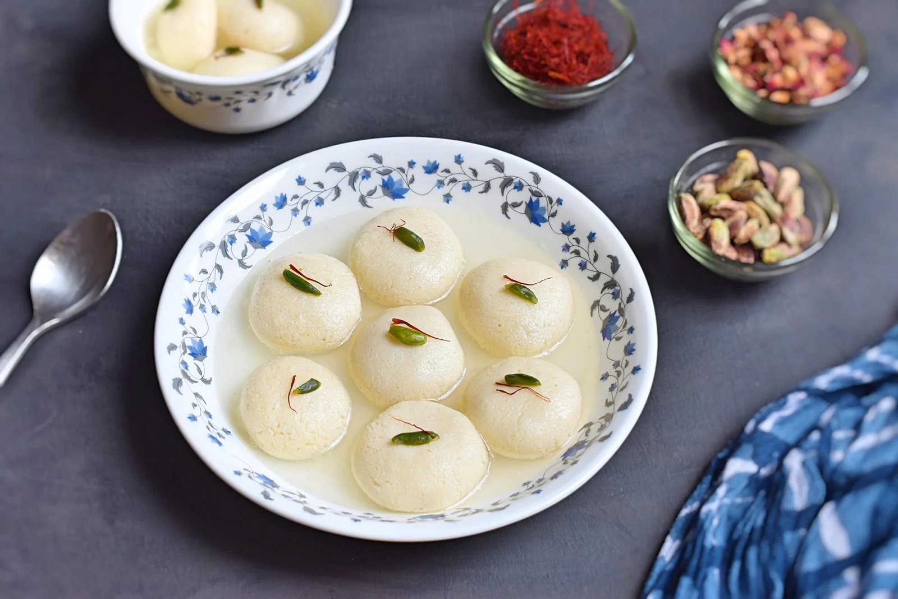
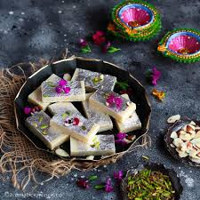

Rasgulle
Ingredients
- Milk
- Lemon Juice or Vinegar
- Water
- Sugar
- Cardamom Powder
- Rose Water or Kewra Water(optional)
- Chopped Pistachios or Almonds(optional)
Recipe
-
Milk:
The key ingredient for making rasgulla. Full-fat milk is boiled and curdled to make chhena (Indian cottage cheese), which forms the base of the rasgulla balls. The fat in the milk helps make the rasgullas soft and spongy. -
Lemon Juice or Vinegar
These are used to curdle the milk. Adding lemon juice or vinegar to boiling milk separates the curds (chhena) from the whey, which is then kneaded into smooth dough to shape the rasgullas. -
Water:
Used for preparing the sugar syrup in which the chhena balls are cooked. The water helps dissolve the sugar and allows the rasgullas to expand and absorb the syrup while cooking. -
Sugar
Essential for making the sugar syrup that gives sweetness to the rasgullas. The cooked rasgullas absorb the syrup, making them soft, spongy, and sweet. -
Cardamom Powder (optional):
This is added to the sugar syrup for flavoring. Cardamom has a sweet, floral aroma that enhances the taste of the rasgullas, adding a touch of warmth and spice to the dessert. -
Rose Water or Kewra Water (optional):
These fragrant waters are used to infuse a delicate aroma into the sugar syrup. Rose water has a floral scent, while kewra water has a distinctive, sweet fragrance. Both give the rasgullas a more aromatic and luxurious flavor. -
Chopped Pistachios or Almonds (optional):
Used for garnishing the rasgullas, they add a crunchy texture and visual appeal. The nuts also complement the sweetness and softness of the rasgullas with a subtle nutty flavor.

Barfi
Ingredients
- Milk or Khoya
- Sugar
- Ghee
- Cardamom Powder
- Nuts(Akmonnds,Pictachios, Cashews - optional)
- Saffron(optional)
- Rose Water(optional)
Recipe
-
Milk or Khoya:
Milk is the base for some barfi recipes where it is reduced and thickened. Khoya (Mawa) is made by cooking milk until all the moisture evaporates, leaving behind milk solids. It is commonly used in barfi to give a rich, creamy texture. -
Sugar:
The main sweetening agent in barfi. It is dissolved into the milk or khoya to create the sweetness that defines this dessert. The amount of sugar can be adjusted to taste. -
Ghee:
Clarified butter that adds richness, smoothness, and a distinct flavor to the barfi. Ghee also prevents the barfi from sticking to the pan and helps bind the mixture together. -
Cardamom Powder:
A fragrant spice that adds a sweet, aromatic flavor to the barfi. Cardamom is often used in Indian sweets for its warm, slightly spicy notes, which enhance the overall taste. -
Nuts (Almonds, Pistachios, Cashews - optional):
These are often used for garnishing or mixed into the barfi for added crunch and richness. Nuts provide texture and complement the sweetness with their nutty flavor. -
Saffron (optional):
Saffron is used for its vibrant color and unique floral flavor. It gives the barfi a luxurious touch and enhances both the appearance and taste of the dessert. -
Rose Water (optional):
Rose water is added for its delicate floral aroma, which complements the sweetness of the barfi. It imparts a subtle fragrance that makes the barfi more aromatic and appealing.
